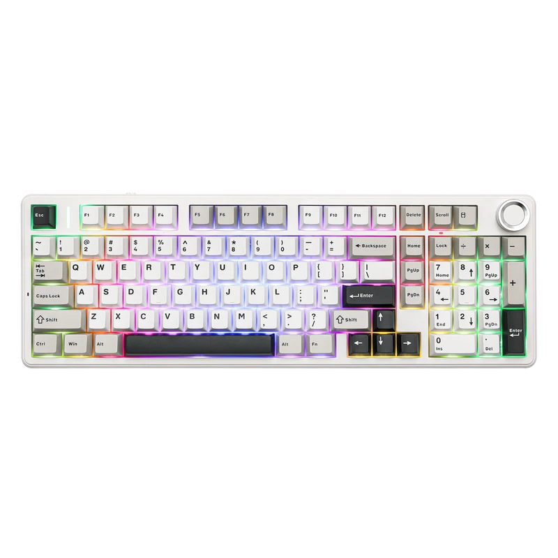
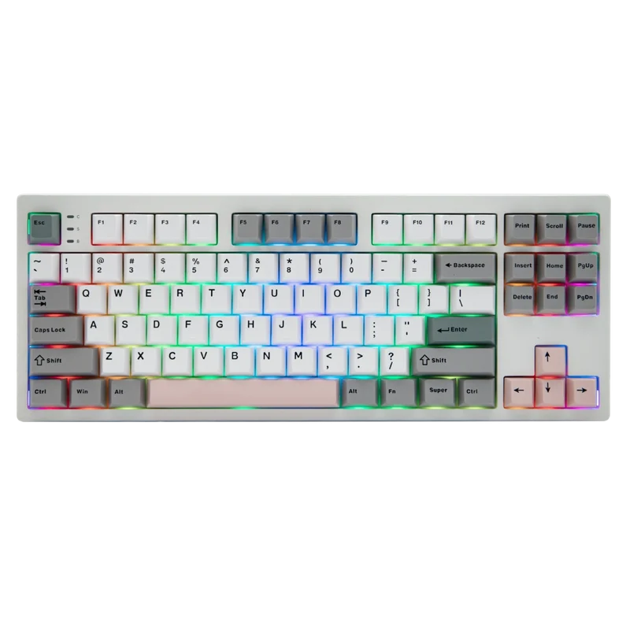
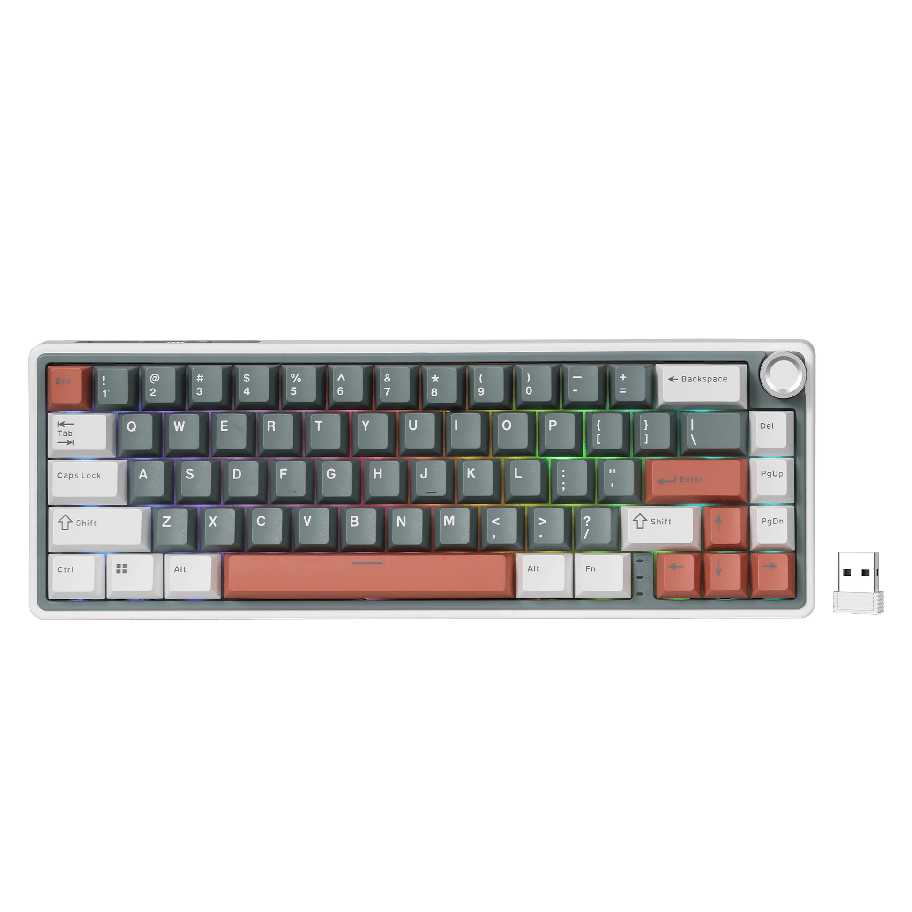
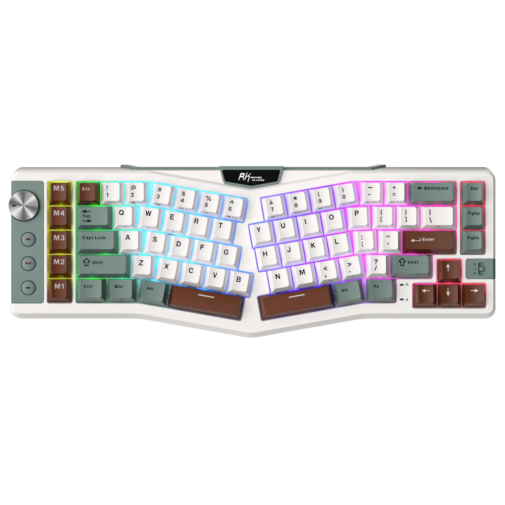

Each layout has its own advantages and is suited for different types of users. 100% is a full sized keyboard and it reduces in size. Most people go for 60%-75% for the amount of keys on the board and helps with desk space. Choose the one that fits your typing style and workspace requirements.